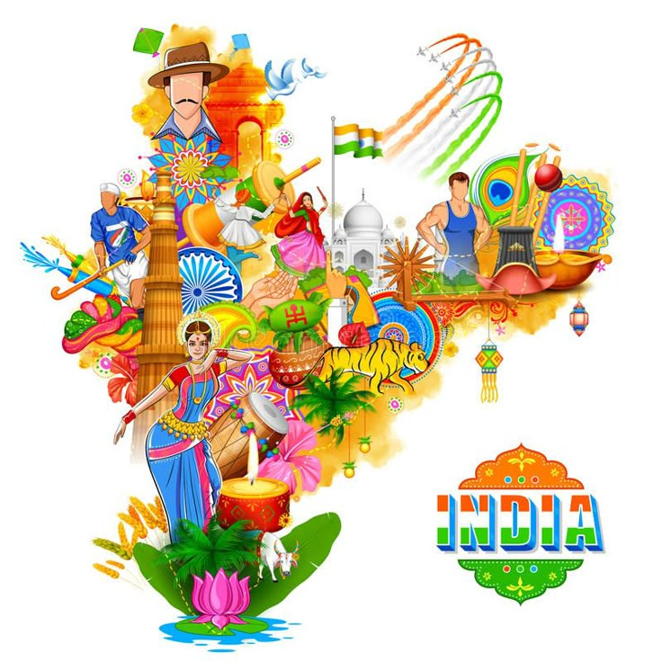

Profile
India is one of the oldest civilizations in the world with a kaleidoscopic variety and rich cultural heritage. It has achieved all-round socio-economic progress since Independence. As the 7th largest country in the world, India stands apart from the rest of Asia, marked off as it is by mountains and the sea, which give the country a distinct geographical entity. Bounded by the Great Himalayas in the north, it stretches southwards and at the Tropic of Cancer, tapers off into the Indian Ocean between the Bay of Bengal on the east and the Arabian Sea on the west.
Lying entirely in the northern hemisphere, the mainland extends between latitudes 8° 4' and 37° 6' north, longitudes 68° 7' and 97° 25' east and measures about 3,214 km from north to south between the extreme latitudes and about 2,933 km from east to west between the extreme longitudes. It has a land frontier of about 15,200 km. The total length of the coastline of the mainland, Lakshadweep Islands and Andaman & Nicobar Islands is 7,516.6 km.